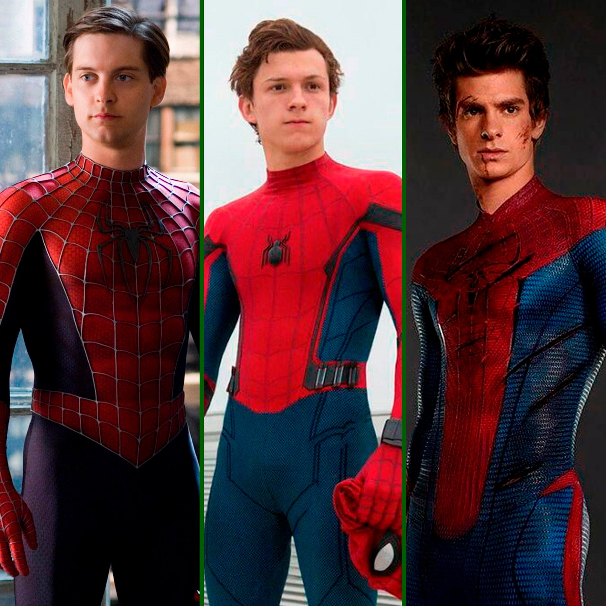
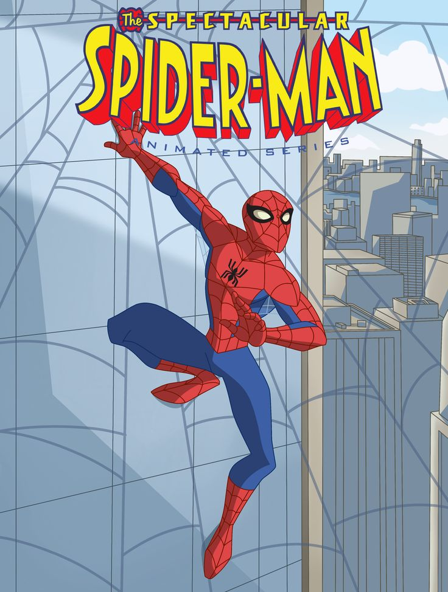
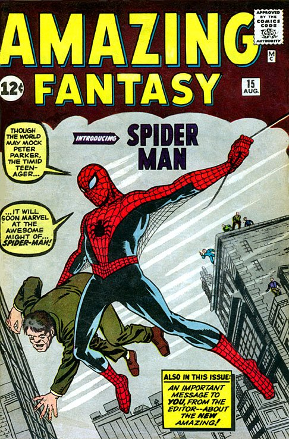

LOS ARACNAUTICOS (LA RELIGION DEL DIOS ARAÑA) |
||
|  |  |
|
 |


|
 |
|  |  |
 |
LOS ARACNAUTICOS (LA RELIGION DEL DIOS ARAÑA) |
||||
EL HATE HACIA TOM HOLLANDLA MAYORIA SE EMPEZO AQUEJAR POR EL APEGO QUE TENIA ESTA VERSION CON TONY STARK / IRON-MAN PARA POSTERIORMENTE SER CRITICADO POR SU 2DO PROYECTO FILMICO PERO SE SACO LA ESPINA CON SU 3ER PROYECTO FILMICO |
LOS SEGUIDORES CADA VEZ QUE HAY UN PRODUCTO FILMICOES UN BONITO RITUAL QUE REALIZA LA COMUNIDAD DE SEGUIDORESDE ESTA RELIGION CADA VEZ QUE ES EL DIA DE ESTRENO DE UN NUEVO PROYECTO FILMICO DEL DIOS ARAÑA, ESTE RITUAL CONSISTE EN REUNIRSE EN UN CENTRO QUE PRESENTE PROYECTOS FILMICOS A LAS 11:30 DE LA NOCHE EN EL DIA ESTIPULADO PARA CADA REGION, EN ESE MOMENTO ES UNA CONVIVENCIA ENTRE SEGUIDORES CON UNA VESTIMENTA SIMILAR A LA DEL DIOS ARAÑA, EN ESTOS MOMENTOS DE CONVIVENCIA SE TOMAN FOTOS ENTRE ELLOS HACIENDO POSEES SIMILARES A LAS DEL DIOS ARAÑA, PARA 30 MINUTOS DESPUES INGRESAR A UNA SALA PARA VER EL PROYECTO FILMICO PREVIAMENTE MENCIONADO. |
LOS 3 DIOSES DEL CINESU 3ER PROYECTO FILMICOEN EL SEPTIMO ARTE SE HAN DADO A CONOCER TRES ACTORES QUE HAN INTERPRETADO AL DIOS ARAÑA, TOBEY MAGUIRE DEL 2002 AL 2007, ANDREW GARFIELD DEL 2012 AL 2014 Y TOM HOLLAND DEL 2016 A LA ACTUALIDAD. |
||
LA PEOR PELICULACASI TODOS LOS SEGUIDORESDEL DIOS ARAÑA ESTAMOS DE ACUERDO QUE ESTE A SIDO EL PROYECTO CON MAS FALLAS EN SU ARCO ARGUMENTAL Y LA CONSTANTE UTILIZACION DEL PERSONAJE TONY STARK PARA DARLE ORIGEN AL VILLANO. PERO ES DESTAC- ABLE EL DESARROLLO DEL PERSONAJE DESDE SU ANTERIOR PROYECTO. |
|
STAN LEEHAY UNA PERSONA QUE YAASCENDIO A UN MEJOR LUGAR PERO NOS DEJO TODO UN LEGADO ATRAVEZ DE SUS PERSONAJES, SIENDO EL MAS MAS GRANDE SPIDER-MAN ALIAS EL DIOS ARAÑA QUE APESAR DE QUE SU CREADOR SE A IDO DE ESTE PLANO DE EXISTENCIA EL SIGUE VIVO EN LOS CORAZONES DE LOS CREYENTES DE SU OBRA. |
||
LA BIBLIA DE LAS ARAÑASEN AGOSTO DEL AÑO 1962SURGE UN LIBRO SAGRADO PARA LOS ARACNAUTICOS TITULADO AMAZING FANTASY #15 SIENDO LA PRIMERA APARICION DEL DIOS ARAÑA DIFICIL DE ENCONTRAR Y EXTREMADAMENTE COMPLICADO DE TENER HOY EN DIA. PERO SON LAS ESCRITURAS SAGRADAS PARA TODO ARACNAUTICO. |
EL TEMPLO SAGRADO DE TODO ARACNAUTICOVULGARMENTE CONOCIDA COMO UNA TIENDA GEEK O TIENDA DECOMICS PERO PARA ESTA RELIGION SIGNIFICA UN TEMPLO SAGRADO DONDE PUEDEN OBTENER VERSICULOS DE LA HISTORIA DEL DIOS ARAÑA PARA APRENDER UN POCO DE LOS 60 AÑOS DE AVENTURAS DE ESTE PERSONAJE YA SEA DEL DIOS ARAÑA PRINCIPAL QUE SE ENCUENTRA EN LA TIERRA 616, O DE LAS DIFERENTES VARIANTES A LO LARGO DEL MULTIVERSO. PERO PARA TODO SEGUIDOR DEL DIOS ARAÑA SERA EMOCIONANTE ENRIQUECER SU CONOCIMIENTO SOBRE EL. |
LA SERIE MAS QUERIDAEN 2008 SALIO UN PRODUCTORELACIONADO AL DIOS ARAÑA UNA SERIE TELEVISIVA QUE APUNTABA A UN PUBLICO MAS INFANTIL, AUNQUE CAUTIVO A CHICOS Y GRANDES POR SU GRAN HISTORIA Y DESARROLLO DEL DIOS ARAÑA Y LA HUMANIDAD Y EL HEROISMO QUE DESEA TRANSMITIR Y APESAR DE SER UN PRODUCTO ANIMADO SE GANO EL CARIÑO DE TODOS LOS ARACNAUTICOS |
||